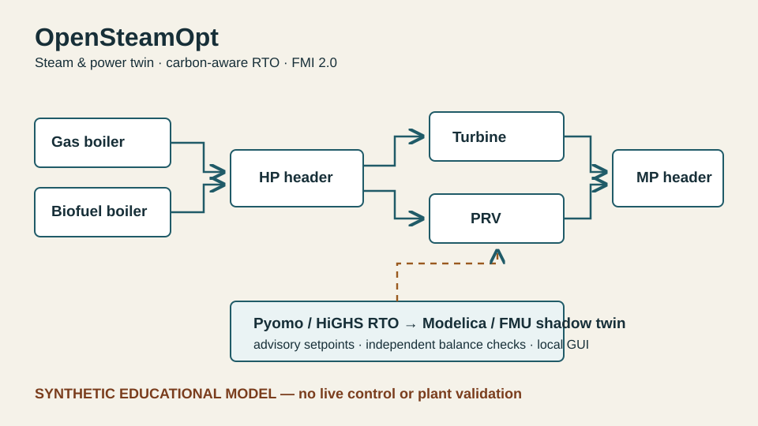

Plant
Two non-identical boilers feed an HP header. A back-pressure turbine and PRV supply the MP header; turbine generation and grid import/export meet site power demand.
Independent educational software · Industrial energy · 2026
An inspectable steam-and-power demonstrator that connects boiler commitment, HP/MP steam transfers, turbine generation, grid exchange and carbon cost through one open-source optimisation and simulation contract.
v0.1 · Synthetic and advisory-only. This is not an ABB product, OPTIMAX clone, commissioned plant twin or operational control system. No plant data, credentials, DCS connection or actuator writes are present.

01 / Architecture
Two non-identical boilers feed an HP header. A back-pressure turbine and PRV supply the MP header; turbine generation and grid import/export meet site power demand.
A 24-hour Pyomo MILP chooses commitment, startup, boiler load, turbine/PRV flow and grid exchange with HiGHS. Fuel, carbon, electricity and operating costs remain separately inspectable.
Accepted setpoints run only against local first-order pressure/flow dynamics in Python or an OpenModelica FMI 2.0 Co-Simulation FMU. A proportional pressure trim is not claimed as MPC.
Synthetic loads & prices → Pyomo MILP → HiGHS → verified hourly schedule
├→ local Streamlit advisory GUI
├→ Python grey-box shadow twin
└→ OpenModelica FMU / FMPy simulation
02 / Reproducible evidence
| Scenario | Declared rule baseline | Optimised | Difference | Direct CO₂ |
|---|---|---|---|---|
| Base | €81,472.30 | €78,749.13 | 3.34% lower | 250.27 t |
| Power-price spike | €83,880.69 | €80,287.06 | 4.28% lower | 250.27 t |
| High carbon price | €102,928.01 | €93,719.71 | 8.95% lower | 102.85 t |
What the numbers mean: they show that the implementation reacts in the expected direction to synthetic electricity and carbon prices while satisfying declared balances. The comparator was authored for this repository. The percentages are not backtested savings, operator performance or a commercial-product comparison.
03 / Local workbench and model exchange
Shows topology, declared asset differences and the steady-state-versus-dynamic boundary.
Expose schedule, cost/emissions, balance residuals, pressure response and verified CSV/JSON downloads.
Reports solver acceptance, OpenModelica detection and the exact implemented/pending feature split.
The light-theme interface was checked in a live browser for contrast, tab navigation, results, downloads and console errors. It runs locally because GitHub Pages cannot execute Python:
uv sync --all-extras --frozen uv run streamlit run app_streamlit.py
The FMU receipt records a successful OpenModelica 1.27.0 export and FMPy run from 0 to 86,400 seconds. The generated binary is intentionally excluded from Git; source and build hashes are retained in the receipt.
04 / Interpretation and planned work
Implemented: two boilers, HP/MP balances, turbine, PRV, grid exchange, commitment/startup/ramping, piecewise boiler fuel, carbon cost, Modelica pressure states, FMI/FMPy integration, advisory/shadow modes, GUI and reproducible artifacts.
Not implemented: multivariable MPC, PID-vs-MPC comparison, measurement reconciliation, forecast learning, historian or OPC UA integration, LP/condensate networks, startup thermodynamics, steam-property packages, safety interlocks or live DCS connection.
Next model-fidelity work is intentionally separate from GB-FLEXABM: richer steam physics first, then a matched control study, then read-only data/deployment research with new safety and cybersecurity gates.
Context: ABB publicly describes industrial steam-and-power optimisation in terms of variable demand, boiler/turbine/valve actuators, constraints and market economics. OpenSteamOpt uses that public problem framing only and includes no ABB code, data, parameters or interfaces. Sources: ABB steam and power optimisation, ABB Ability OPTIMAX, OpenModelica and HiGHS.